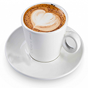
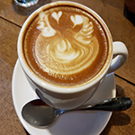

25-60-60")
Кофе капучино
Традиция добавлять в крепкий кофе молоко для смягчения резкости вкуса появилась, примерно, в 17 веке. У нас нет достоверных сведений о том, кто и когда стал автором этого новшества. Но уже с конца 18 века кофе с молоком подавали во всех существующих кофейнях Европы.
 Капучино – термин итальянского происхождения. В переводе означает «капуцин», поэтому название связывают с орденом монахов-капуцинов. Опытным путем выяснили, что если в кофе добавить хорошо перемешанную смесь молока и сливок, то на поверхности образовывалась устойчивая пена в форме небольшой пирамиды. Из-за сходства с белыми остроконечными капюшонами монахов-капуцинов кофе и прозвали «капучино».
Состав кофе капучино Список основных ингредиентов для капучино состоит всего из двух пунктов: Свежеприготовленный кофе Можно взять порцию эспрессо, сварить кофе в джезве, гейзерной кофеварке или просто настоять во френч-прессе. Обязательное условие: кофе, приготовленный вручную, нужно процедить, чтобы частички гущи не помешали наслаждаться капучино. Молоко Молоко должно быть взбито или вспенено до превращения половины его объема в гладкую, устойчивую пену. Можно взять молоко любой жирности. Если вы готовите капучино дома и хотите добиться хорошей, стойкой и гладкой пены без использования капучинатора, то выберите смесь сливок и молока в пропорции 1:1.